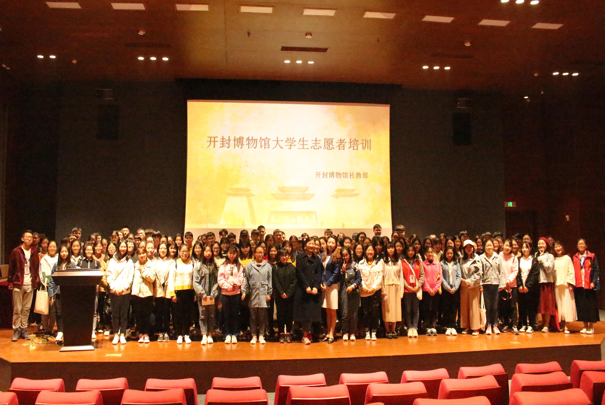
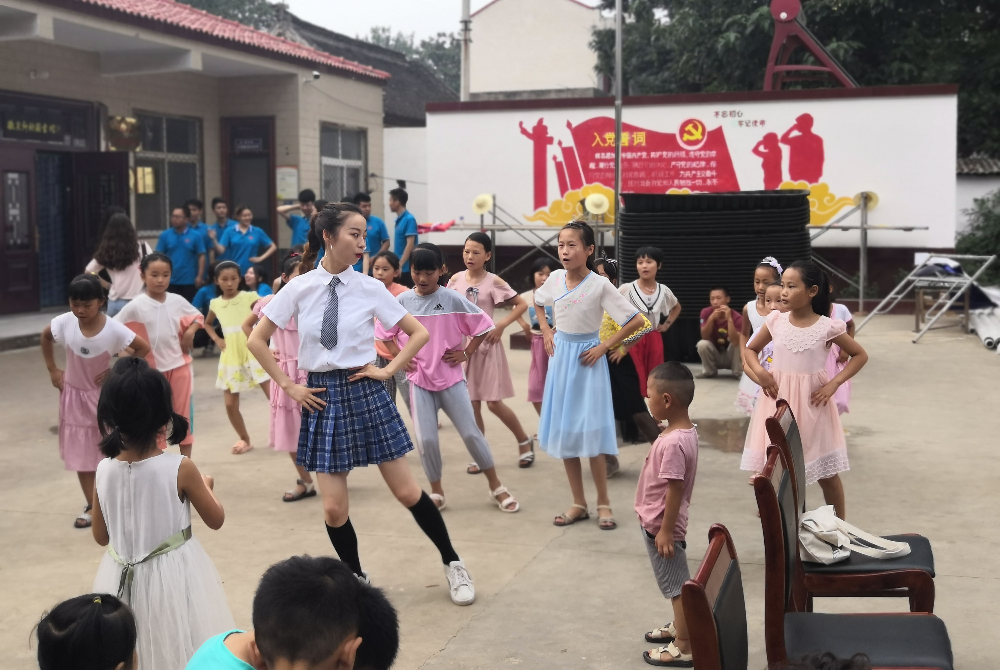
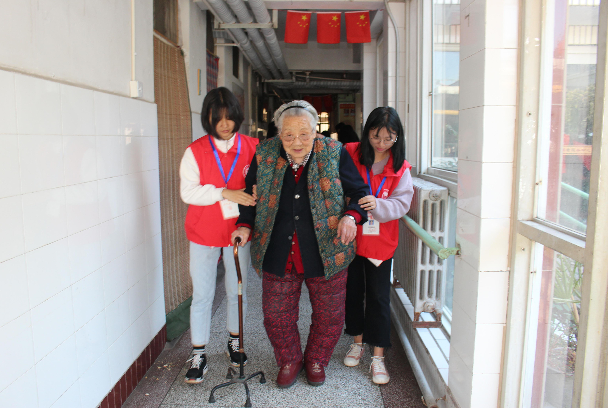

如果你在任何时候，任何地方，你一生中留给人们的都是些美好的2113东西—鲜花，思想，以及对你的非常美好的回忆，那你的生活将会轻松而愉快。那时你就会感到所有的人都需要你，这种感觉使你成为一个心灵丰富的人。你要知道，给永远比拿愉快。 ——高尔基《海燕》
河南大学商学院青年志愿者协会是由自愿从事社会公益事业的河南大学商学院学生组成的，是直属于河南大学商学院团委的群众性学生组织，协会自2007年成立以来，始终秉承着“奉献，友爱，互助，进步”的志愿者精神和“奉献爱心，收获真情”的协会宗旨，在校规校纪允许的范围内开展工作。
协会层级机构
协会分为主席层、部长层、委员层三级组织结构。主席层负责协会发展方向的把握，部长层负责日常管理和活动组织开展，委员层负责具体活动的落实与日常工作。
协会下属管理部、实践部、协调部、宣传部、公关部五大职能部门。每次志愿活动的开展均由五大部门合力推进，部门平级，各有所长。
协会任务目标
为商学院基层志愿者创造良好的工作学习环境，提供尽可能多的志愿服务机会。同时负责本院青年志愿者的组织工作，培训青年志愿者，提高青年志愿者的思想道德素质和科学文化素质，培养其服务意识和社会责任感。并带领广大志愿者实现自己的公益梦想，真正做到为他人服务，尽可能多地接触社会，得到更多的锻炼与成长。
协会美好愿景
希望有更多志同道合的志愿者加入我们，我们致力于开发真正做到服务社会奉献社会的公益活动。我们希望每一个参加活动的志愿者都能有所收获与成长，每一名受我们影响的大学生都能做到心存善良，关爱他人。
我们愿意无私奉献自己的时间、精力。为实现中华民族伟大复兴中国梦贡献自己微薄的力量。
我们的宣传视频
只要人人都献出一点爱，世界将变成美好的人间。 用生命去影响生命，向志愿者学习，致敬！ 热爱公益事业，践行志愿者精神，让志愿者精神永放光芒！
付出比收获更快乐，给予比接纳更心安！关心别人，善待自己！除了微笑什么都不要留下，除了回忆什么都不要带走！
志愿活动


开封市博物馆志愿活动
图为礼仪培训会后合照“开博志愿行“是协会的精品公益志愿服务活动。活动自18年举办以来，已经举办四届。共有上千名志愿者报名，数百人参与，影响范围广，参与人数多，服务时间与频次也是历次活动之冠。

暑期三下乡赴前付村支教
图为志愿者小姐姐正在教舞蹈2019年暑假，商学院青协协同艺术团前往前付村开展支教活动。为满足孩子们的兴趣，我们开设了太极、舞蹈、朗诵、歌唱等特色课程。最后我们以一场别开生面的文艺晚会作为支教活动的告别。
更多活动

家源敬老院敬老活动
图为志愿者正在搀扶老人家源敬老院是小青们每年都会去的地方。每到重阳节，小青们就会结伴前往家源敬老院，为老人们打扫庭院，开设文艺小剧场，并与老人们谈心话家常。老人们的笑容，就是我们此行的目的。